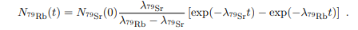

Context of data collection was 10-6 moles of Sr-79 decaying into Rb-79, then photons detected from the beta plus decay of the Rb-79.
Comparing to known values of decay constant, Rb-79=0.5ms-1 and Sr-79=5ms-1, spot on.
Without considering uncertainties, first we derive the activity of Rb-79 with some differential equation substitutions.
This is going to create the red model curve seen previously, and to then create the line of best fit, we can use a least squares method with a few iterations to obtain the best values for the decay constants for Rb-79 and Sr-79, by minimising chi^2. Quite simple, uncertainties are a bit more involved.
Uncertainties calculated with contour plot.
To calculate the uncertainties associated with these values, we'll vary the values of the decay constant slightly and with each variation, recalculate chi^2. If observed from the side this contour plot would be a valley.
Using some nice relationships between chi^2 and the standard deviation of parameters, if we take the ellipse of constant chi^2+1, and calculate the difference from the top and bottom of the the ellipse, we'll get 1 standard deviation(uncertainty) of the parameter on the vertical axes. (Similary for the horizontal axes)
Home